Sidekick Star 操作マニュアル
星景写真向けの RAW現像 / 2WB現像 / 強調 / 比較明スタックを、迷わず使うための最短ガイドです。
まずは 比較明スタック か RAW現像 のどちらかひとつから始めればOKです。迷ったら比較明スタックを使ってください。
1. ライセンス画面
初回起動時、または未登録時にこの画面が表示されます。これはエラーではありません。
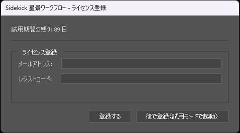
試用期間中は「後で登録（試用モードで起動）」を押してください。
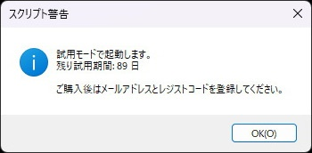
このメッセージが出たら正常です。試用モードのまま起動できます。
試用期間は 90日です。まずはそのまま使い始めて問題ありません。
2. 起動画面
Sidekickを起動すると、この画面が表示されます。ここから処理内容を選びます。
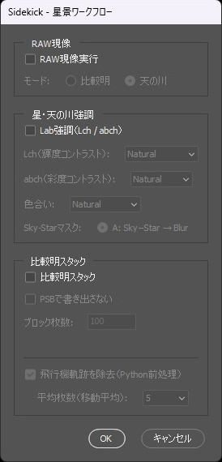
RAW現像 / 星・天の川強調 / 比較明スタック の3ブロックがあります。
3. RAW現像
RAW現像を使う場合は、最初に RAW現像実行 にチェックを入れ、モードを選びます。
比較明
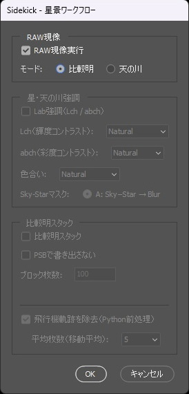
星をつなげる素材づくり用。通常はこちらを使います。
天の川
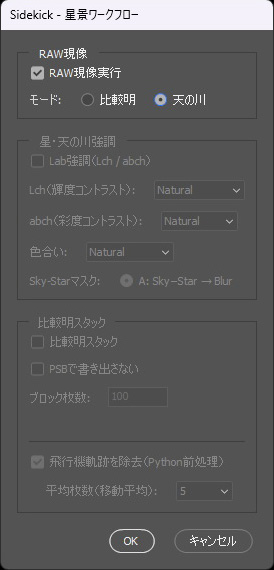
天の川を強調した単体作品づくり用です。
迷ったら 比較明 を選んでください。
4. 星・天の川強調
仕上がりを調整する機能です。最初は全部 Natural で大丈夫です。
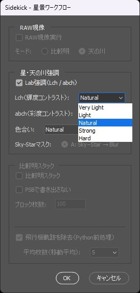
チェックを入れると、Lch / abch / 色合い を調整できます。
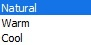
色合いは Natural / Warm / Cool の3択です。
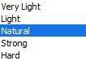
Lch = 輝度コントラスト。迷ったら Natural。
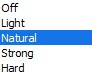
abch = 彩度コントラスト。迷ったら Natural。
色合い = 全体の色バランス。迷ったら Natural。
基本設定：Lch = Natural / abch = Natural / 色合い = Natural
5. 比較明スタック
複数枚を合成して星をつなげる、Sidekick Star のメイン機能です。
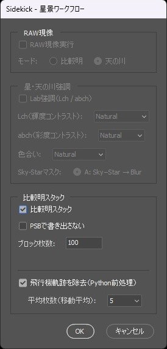
まずは 比較明スタック にチェックを入れてOKです。
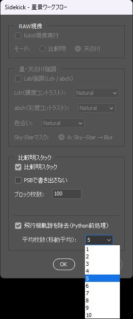
飛行機が多いときは、飛行機軌跡を除去をONのまま使ってください。平均枚数は 5 のままでOKです。
PSBで書き出さない は通常OFFで問題ありません。
ブロック枚数 は 100 のままで大丈夫です。
6. 処理結果の例
下の3枚は、RAW → 2WB現像 → 強調 の変化です。
RAW（撮影そのまま）
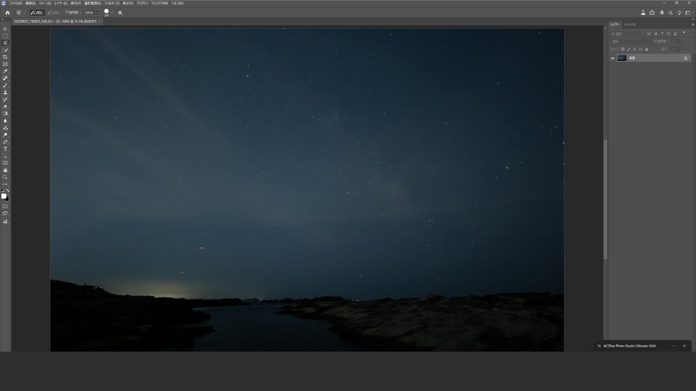
暗く、コントラストも弱い状態です。
2WB現像
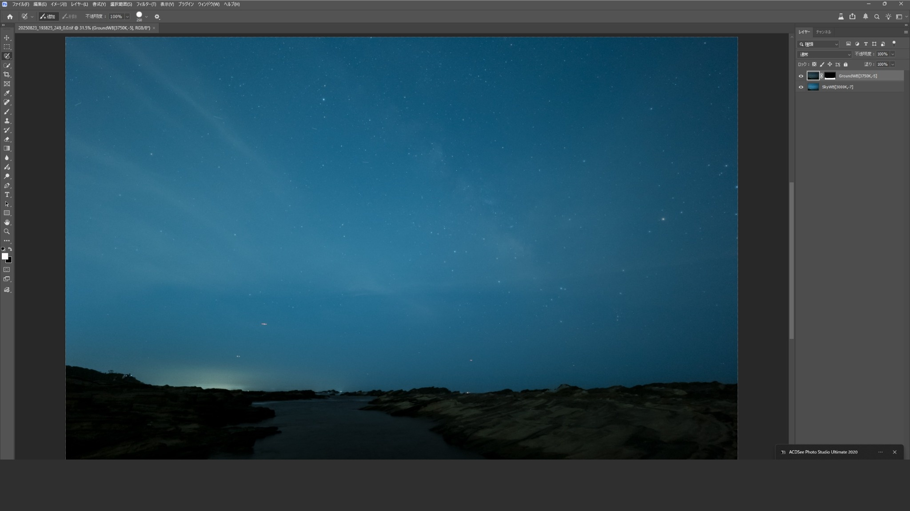
空と地上を分けて最適化し、見え方を整えます。
強調後
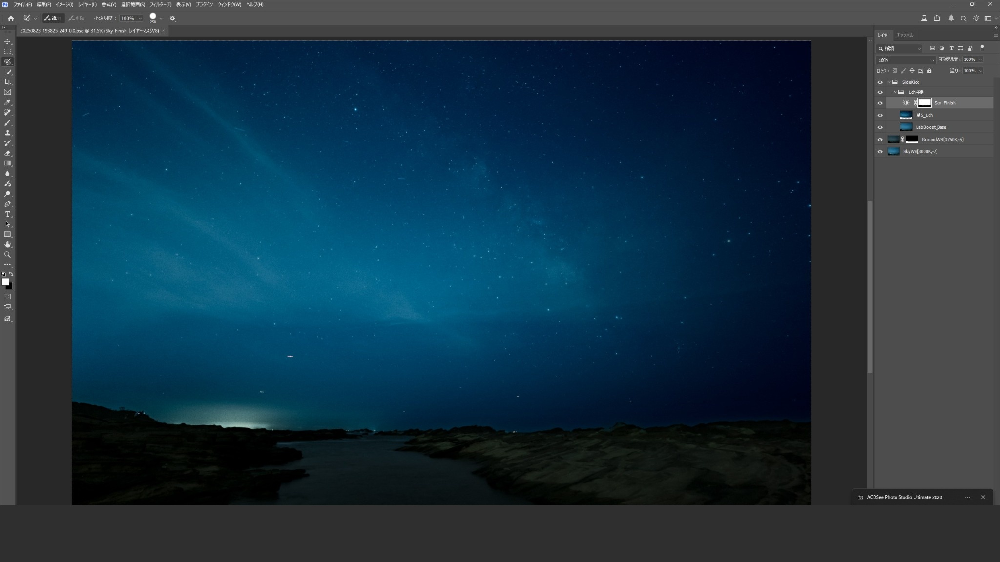
天の川の構造や星の見え方が、よりはっきりします。
特別な知識や複雑な調整は不要です。まずはデフォルト設定のまま試してください。
7. 最初のおすすめ手順
- 初回は「後で登録（試用モードで起動）」で進む
- 起動画面で、やりたい処理にチェックを入れる
- 迷ったら、比較明スタックだけONにしてOKを押す
- 強調を使う場合は、まず全部 Natural のまま試す
- 飛行機が多いときだけ、飛行機軌跡除去をONで使う